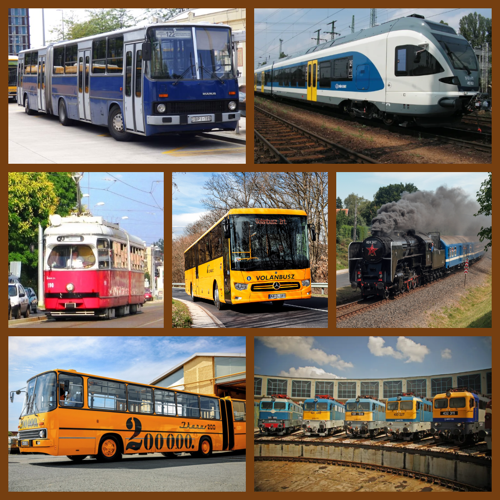

Tanczik Máté weboldala |

|
Rólam
Tanczik Máté vagyok, 14 éves, a Miskolci SZC Kandó Kálmán Informatikai Technikum tanulója. Alsózsolcán élek, ide is jártam általános iskolába, az Alsózsolcai Herman Ottó Általános Iskola és AMI-be. Szeretek fotózni, járni a természetet. Különösen érdekel az informatika és a tömegközlekedés világa.
